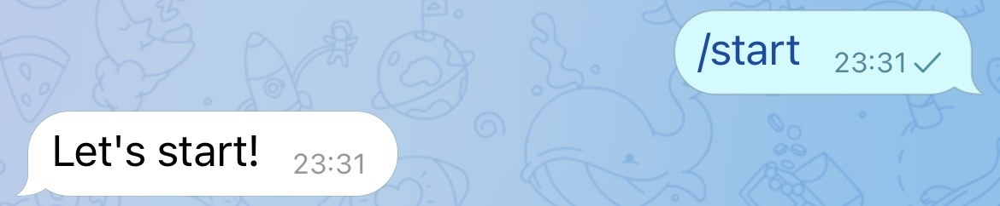
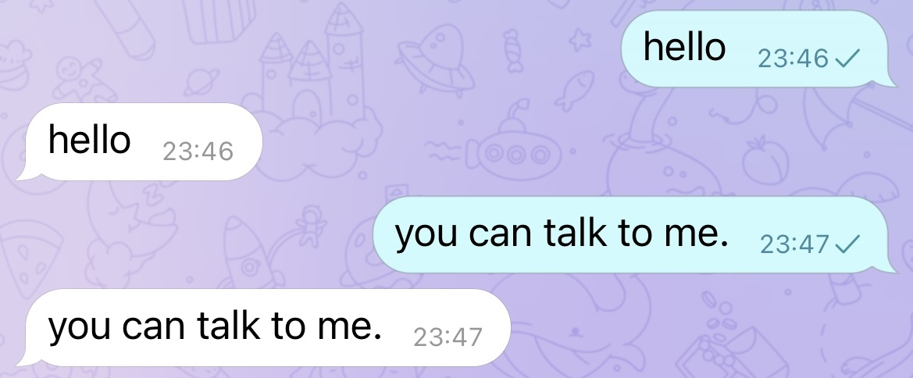
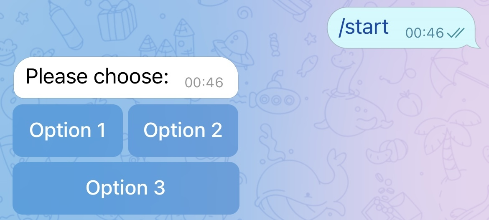
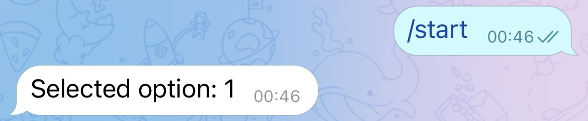

在此之前
收指令
python-telegram-bot wiki 页面 介绍了如何使用 Python 脚本实现与 Bot 交互。
以下是根据这个 wiki 页面编写的例程。
接收 /start 指令
from telegram import Update
from telegram.ext import Updater, CallbackContext, CommandHandler
token = '2110628450:AAHQ78uj42ddtdsx0gKfaZGyFUhpnQ13vyM'
def start(update: Update, context: CallbackContext):
context.bot.send_message(chat_id=update.effective_chat.id, text="Let's start!")
# 或
# update.message.reply_text("Let's start!")
if __name__ == '__main__':
updater = Updater(token=token, use_context=True) #1
start_handler = CommandHandler('start', start) #2
updater.dispatcher.add_handler(start_handler) #3
updater.start_polling() #4
updater.idle() #5
- 首先根据 token 创建一个
updater对象； - 定义
start函数，在函数体中实现给发指令的那个chat_id发送消息「Let’s start!」，并将这个函数与start指令关联； - 将
start函数作为CommandHandler添加到update.dispatcher中； - 当前设定的指令开始运作，程序会自动持续地向 Telegram 的服务器发送请求，以实时接收指令；
- 等待用户 Control-C 或者进程杀死。
运行此程序，并与 Bot 对话，执行指令 /start ，结果如下：

对话
from telegram import Update
from telegram.ext import Updater, CallbackContext, CommandHandler, MessageHandler, Filters
token = '2110628450:AAHQ78uj42ddtdsx0gKfaZGyFUhpnQ13vyM'
def echo(update: Update, context: CallbackContext):
context.bot.send_message(chat_id=update.effective_chat.id, text=update.message.text)
if __name__ == '__main__':
updater = Updater(token=token, use_context=True)
echo_handler = MessageHandler(Filters.text & (~Filters.command), echo) #1
updater.dispatcher.add_handler(echo_handler) #2
updater.start_polling()
updater.idle()
将之前的代码稍作修改：
- 将之前的
start函数改为echo函数，其作用是将发给 Bot 的消息发送回来，并将之前的CommandHandler改为MessageHandler，这里Filter的作用是过滤文本和非指令信息； - 添加到
dispatcher中。
运行此程序，并与 Bot 对话，Bot 会将原话发送回来：

指令键盘
关于这一部分，python-telegram-bot 有一个 例程，和对应的 wiki。
from telegram import InlineKeyboardButton, InlineKeyboardMarkup, Update
from telegram.ext import Updater, CallbackContext, CommandHandler, CallbackQueryHandler
def start(update: Update, context: CallbackContext):
keyboard = [
[
InlineKeyboardButton("Option 1", callback_data='1'),
InlineKeyboardButton("Option 2", callback_data='2'),
],
[
InlineKeyboardButton("Option 3", callback_data='3'),
]
] #1
reply_markup = InlineKeyboardMarkup(keyboard) #2
update.message.reply_text("Please choose:", reply_markup=reply_markup) #3
def keyboard_callback(update: Update, context: CallbackContext): #4
query = update.callback_query #5
query.answer() #6
query.edit_message_text(text=f"Selected option: {query.data}") #7
if name == '__main__':
updater = Updater(token=token, use_context=True)
start_handler = CommandHandler('start', start)
updater.dispatcher.add_handler(start_handler)
updater.dispatcher.add_handler(CallbackQueryHandler(keyboard_callback)) #8
updater.start_polling()
updater.idle()
- 同样回到
start函数，这次我们更改下/start指令内部逻辑，一开始定义了一个二维数组，我们可以简单地理解为定义了两排按钮，第一排是Option 1和Option 2，第二排是Option 3； - 将其转换为
InlineKeyboardMarkup类型以便发送； - 将这个指令键盘作为回复发送；
- 定义一个新的函数，作为用户按键盘后的 handler；
- 当用户点击按钮，
update.callback_query中拥有此指令信息，将其定义为query； - 调用
query的answer()方法，即告诉用户「回复」了这条指令，表现为客户端不再显示等待这条指令的 UI； - 将用户选择的值作为一条消息覆盖原来的键盘消息；
- 将此 handler 加入
dispatcher。
运行此程序，并与 Bot 对话，执行指令 /start ，结果如下：

当点选 “Option 1” 后，出现 Loading 的提示后，原消息更改为以下结果：

下一步…
未完待续